O que é polarização partidária? E como podemos prever eleições a partir dela
Nos 2º turnos das eleições, as transferências de votos normalmente acontecem para candidatos próximos ideologicamente
Você sabia que existe um novo método para estimar a transferência de votos de acordo com a polarização dos partidos? Inspirado em estudos recentes sobre o comportamento eleitoral na América Latina e Europa, podemos entender como a escolha dos eleitores é influenciada por suas emoções em relação aos candidatos e a sua percepção de quais candidatos são próximos ideologicamente. E assim prever vencedores em 2º turnos de eleições.
O ponto central é que, mesmo em países com diversos partidos, como o Brasil, os eleitores tendem a se dividir em dois grandes blocos ideológicos: esquerda e direita. Isso afeta diretamente como os votos se transferem entre candidatos no segundo turno das eleições municipais, mesmo quando os concorrentes são ideologicamente próximos.
Usando modelos matemáticos que medem a distância ideológica entre candidatos, calculamos como os votos se movimentam entre o primeiro e o segundo turno, e estimamos quais os prováveis vencedores das eleições de 2024 em 15 capitais brasileiras.
1 A polarização
O que você pensaria se alguém próximo se casasse com uma bolsonarista/petista?
Perguntas como essa podem ser utilizadas mensurar polarização .
O termo é usado por cientistas políticos como uma forma de explicar as diferenças que eleitores sentem em relação ao grupo ideológico que pertencem (direita, por exemplo), e ao grupo que percebem como contrário ao seu (esquerda, no caso).
Neste jogo de “nós” e “eles”, as escolhas podem estar mais ligadas à percepção da distância do que a um conjunto coerente de crenças políticas. Assim, quando diante de uma situação em que seu candidato preferido não está mais concorrendo, eleitores tendem a migrar o voto num movimento afetivo para o candidato mais semelhante que encontrem. E com isso é possível arriscar prever o resultado do 2º turno de eleições.
2 Meotodologia
2.1 A equação
Para calcular a transferência de votos, o primeiro passo é situar os candidatos ideologicamente, e medir a distância entre eles. Graças aos estudos Bolognesi et al. (2023), temos uma medida bastante razoável da ideologia de cada partido. Variando de 0 (esquerda) a 10 (direita), essa “régua de ideologia” permite situar os concorrentes numa escala ideológica e medir a distância ideológica entre eles.
Por exemplo: se um candidato é do PDT, ele está no marco 3,92 da escala de ideologia que estamos usando. Já um candidato do PL está no marco 8,11 da mesma escala. A distância entre eles é de 4,19 pontos de ideologia.
A partir das distâncias, é possível estimar a taxa de transferência de votos com a seguinte equação:
\[ \text{Taxa de Transferência} = \frac{1 - a}{1 + d^b} \] Nesta equação, temos:
Distância ideológica \(d\) entre os candidatos.
Controle geral \(a\) de transferência dos votos.
- Para que serve?
Quanto maior \(a\), menor a transferência, mesmo para candidatos próximos.
- Quando usar?
Quando acreditamos que nem todos os votos são transferidos - mesmo para candidatos próximos, por exemplo.
- Para que serve?
Controle do decaimento \(b\) para candidatos distantes.
- Para que serve?
Quanto maior o valor de \(b\), mais rápido será o caimento da taxa de transferência para candidatos distantes. - Quando usar?
Quando acreditamos que existe um limite de distância ideológica para os votos serem transferidos, por exemplo.
- Para que serve?
2.2 Versões
A versão mais simples desta equação é quando \(a\) = 0 e \(b\) = 1. Nesta situação, não reduzimos a taxa de transferência para candidatos próximos, e deixamos que o caimento seja suave para distâncias maiores.
Para uma melhor compreensão, mostramos na Figura 1 o comportamento da equação de transferência de votos para diferentes situações:
Versão 1: \(a\) = 0.15 e \(b\) = 1.00;
Versão 2: \(a\) = 0.00 e \(b\) = 1.15; e
Versão 3: \(a\) = 0.15 e \(b\) = 1.15.
Quando aumentamos \(a\), reduzimos a transferência para candidatos próximos (d = 0.1) de 91% (Versão Simples) para 77% (Versão 1).
Quando aumentamos \(b\), aceleramos a queda de a transferência de votos para candidatos distantes: com d = 5.1, temos uma transferência de votos de 13% (Versão 2) contra 16% (Versão Simples); e com d = 9.6 (maior distância que permite uma transferência), temos 7% (Versão 2) contra 9% (Versão Simples).
Quando aumentamos \(a\) e aumentamos \(b\) (Versão 3), reduzimos tanto a transferência para candidatos próximos quanto para candidatos distantes.
2.2.1 A mesma taxa para 2 candidatos!?
Uma questão que você pode estar se perguntando é: ok, a distância determinada a taxa, porém, faz sentido a taxa ser a mesma para os dois candidatos?
Chamamos de simétricos os modelos em que a taxa é a mesma para os dois candidatos. E de assimétricos os modelos em que temos uma taxa para cada candidato - o que faz sentido em situações em que um dos candidatos apresentam rejeição consideravelmente maior que o outro, por exemplo.
Para o \(candidato_i\):
\[ \text{Taxa de Transferência}_i = \frac{1 - a_i}{1 + d^{b_i}} \]
Para o \(candidato_j\):
\[ \text{Taxa de Transferência}_j = \frac{1 - a_j}{1 + d^{b_j}} \]
Assim, você pode, por exemplo:
aumentar \(a_i\) caso acredite que a rejeição do \(candidato_i\) é consideravelmente maior que a rejeição do \(candidato_j\); ou
aumentar \(b_j\) caso acredite que o partido do \(candidato_j\) é percebido de maneira mais polarizada e, portanto, tende a receber menos votos de candidatos distantes.
2.3 Votos esperados
Continuando com o nosso exemplo, imagine uma candidata da União Brasil, que está no marco 8,34 da nossa escala de ideologia. É razoável supor que a maior parte de seus votos será transferida para o candidato do PL, cuja distância para ela é de apenas 0,23.
Porém, aqui entra um segundo componente importante que é o total de votos que o candidato teve no 1º turno. Afinal de contas, se nossa candidata da União Brasil recebeu poucos votos no primeiro turno, mesmo tendo proximidade ideológica, ela não terá muito o que transferir para o candidato do PL.
Assim, chegamos a nossa equação de votos esperados
A estimativa de votos esperados para o candidato (i) no segundo turno pode ser definida pela seguinte equação:
\[ \text{Votos esperados do candidato } i = \sum_{j} \left( \% votos_{j}^{1T} \times \text{Taxa de Transferência}_{ij} \right) + votos_i^{1T} \]
Nesta equação, temos:
- \(\% votos_{j}^{1T}\) representa o percentual de votos recebidos pelo candidato (j) no primeiro turno.
- \(\text{Taxa de Transferência}_{ij}\) é a taxa de transferência de votos do candidato \(j\) (1º turno) para o candidato \(i\) (2º turno).
- \(votos_i^{1T}\) são os votos que o candidato \(i\) já recebeu no primeiro turno.
Então, os votos esperados somam o percentual de votos recebidos por cada candidato \(j\) do primeiro turno ponderado pela respectiva taxa de transferência, e os votos que o candidato \(i\) já recebeu no primeiro turno.
2.4 Votos ajustados
Uma vez que a transferência de votos pode resultar em vencedores com menos votos que \(50% + 1\), é preciso ajustar os votos.
Isso pode ser feito com:
ajuste por adição, adicionando uma constante para que os votos do vencedor chegue em \(50% + 1\); ou
ajuste por multiplicação, encontrando um fator que equalize a votação proporcionalmente para 100% dos votos válidos.
2.4.1 Ajuste por adição
Neste caso, encontramos a diferença da votação do vencedor para 50.01% e adicionamos este valor para o vencedor e o perdedor.
\[ \text{Votos Ajustados} = \begin{cases} V_i + (50.01 - V_i) & \text{se } \max(V_i) < 50.01 \\ V_j + (50.01 - V_i) & \text{se } V_j = 100 - V_i \end{cases} \]
Onde:
\(V_i\) representa a quantidade de votos do candidato vencedor,
\(V_j\) representa a quantidade de votos do candidato perdedor,
Se o candidato vencedor tiver menos de 50.01% dos votos, ajustamos para garantir que ele tenha pelo menos 50.01% dos votos totais.
Para não ficar desbalanceados, adicionamos a mesma constante no candidato perdedor.
2.4.2 Ajuste por multiplicação
Neste caso, padronizamos as votações de acordo com o somatório das votações, fazendo uma regra de 3.
\[ \text{Votação Ajustada do Vencedor} = \frac{\text{Votação do Vencedor}}{\sum \text{Votações Ajustadas}} \times 100 \]
\[ \text{Votação Ajustada do Perdedor} = \frac{\text{Votação do Perdedor}}{\sum \text{Votações Ajustadas}} \times 100 \]
3 Possibilidades da nova técnica
Esta nova técnica traz algumas possibilidades quando comparada com metodologias consolidadas de sondagem eleitoral, como entrevistas, grupos focais e pesquisas de opinião:
A equação de transferência de votos é significativamente mais econômica e mais rápida do que pesquisas de opinião. E ainda larga na frente das entrevistas e grupos focais quando o assunto é capacidade de generalização;
Este método também é transparente e replicável, permitindo que outras pessoas possam estimar e criticar os cálculos, o que aumenta a confiança nos resultados;
Diferente das pesquisas de opinião e das entrevistas, este método pode ser customizado. Por exemplo pode ser aplicado por zona e por seção eleitoral, sendo capaz de identificar com precisão quais são as localidades com maior chance de transferir votos.
4 Resultados
Vamos conferir os resultados da aplicação da nova técnica, começando pelos resultados gerais. Depois, são apresentados os resultados das capitais. Em seguida, temos os resultados das outras cidades. Por fim, apresentamos o Apêndice, com a metodologia detalhada e as tabelas explicativas dos cálculos realizados.
Boa leitura!
4.1 Resultado geral
O resultado geral do modelo pode ser resumido com a Figura 2 contendo os prováveis vencedores e os percentuais (%) estimados.
Para a construção dos resultados, utilizamos o seguinte
- Modelo simples, com \(a\) = 0 e \(b\) = 1;
- Modelo simétrico, com a mesma taxa para os dois candidatos;
- Ajuste por multiplicação.
4.2 Capitais
Agora, vamos mergulhar nos resultados resultados detalhados por capital, com a identificação de qual candidato e em quais quantidades devem ser transferidos os votos para os concorrentes do 2º turno.
Para facilitar, podemos chamar os candidatos na parte de baixo da figura de doadores, ou seja, aqueles que ficaram de fora do segundo turno e que terão seus votos transferidos; e os candidatos da parte de cima da figura de receptores, isto é, os dois mais votados no 1º turno e que irão receber os votos transferidos.
A direção da seta na imagem indica o fluxo de votos, enquanto a largura e a cor da seta apontam a intensidade da transferência. Assim, quanto mais escura e mais larga a seta, mais votos estão saindo de um candidato para o outro. Lembrete: quanto maior a distância ideológica, menos votos são transferidos - e também, quanto menos votos no 1º turno, menos votos há para transferir.
4.2.1 Aracaju

4.2.2 Belo Horizonte

4.2.3 Belém

4.2.4 Campo Grande
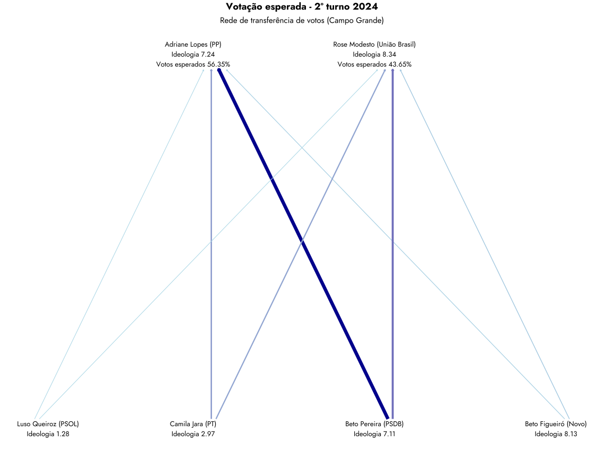
4.2.5 Cuiabá

4.2.6 Curitiba
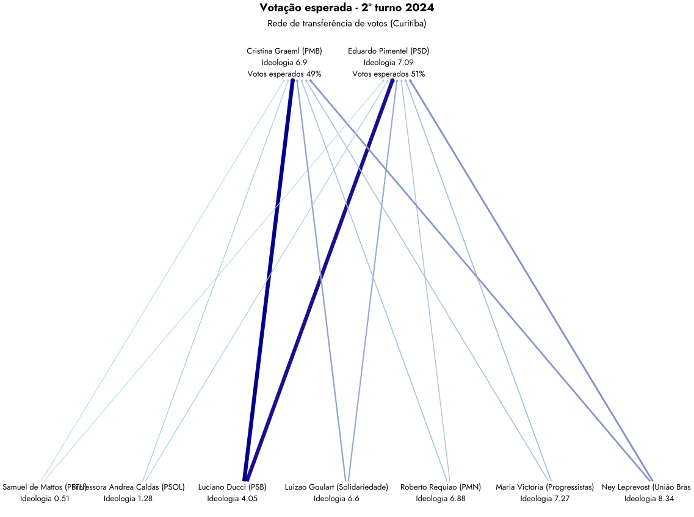
4.2.7 Fortaleza
4.2.8 Goiânia

4.2.9 João Pessoa
4.2.10 Manaus

4.2.11 Natal

4.2.12 Palmas
4.2.13 Porto Alegre

4.2.14 Porto Velho
4.2.15 São Paulo

4.3 Outras cidades
Depois dos resultados detalhados por capital, você pode conferir os resultados das outras cidades.
4.3.1 Anápolis
4.3.2 Aparecida de Goiânia
4.3.3 Barueri
4.3.4 Camaçari
4.3.5 Campina Grande
4.3.6 Canoas
4.3.7 Caucaia
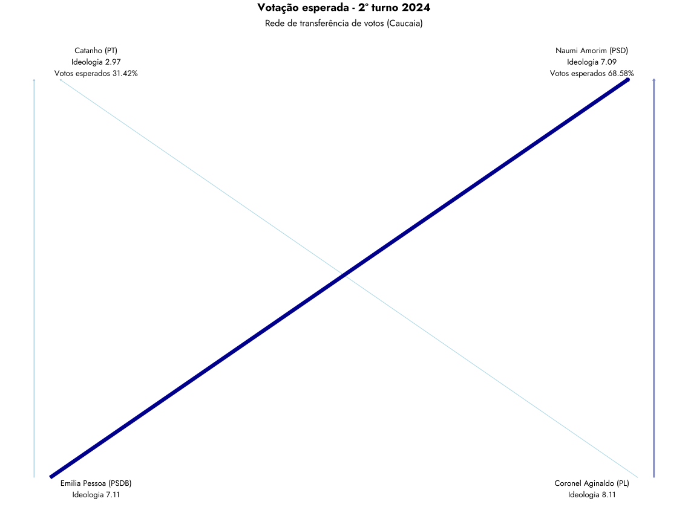
4.3.8 Caxias do Sul
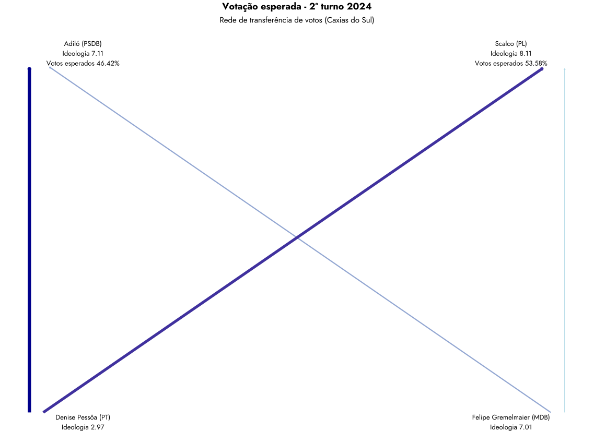
4.3.9 Diadema
4.3.10 Franca
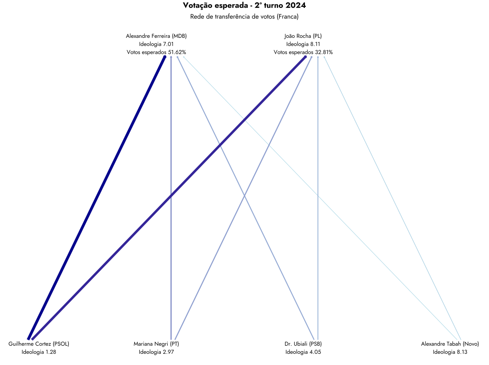
4.3.11 Guarujá
4.3.12 Guarulhos
4.3.13 Imperatriz
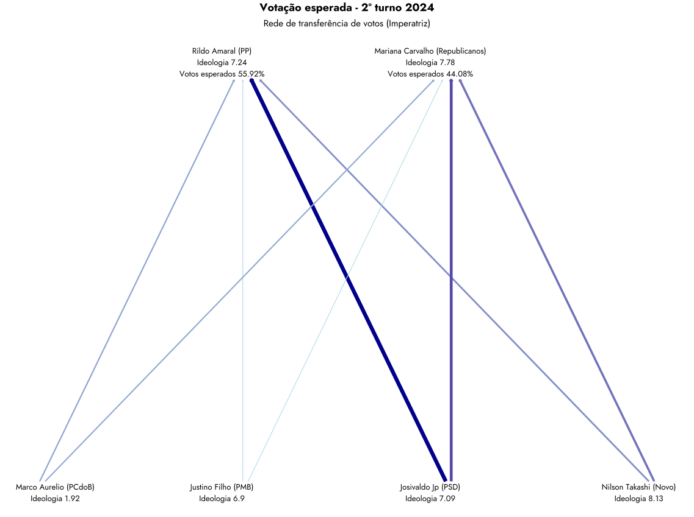
4.3.14 Jundiaí
4.3.15 Limeira
4.3.16 Londrina
4.3.17 Mauá
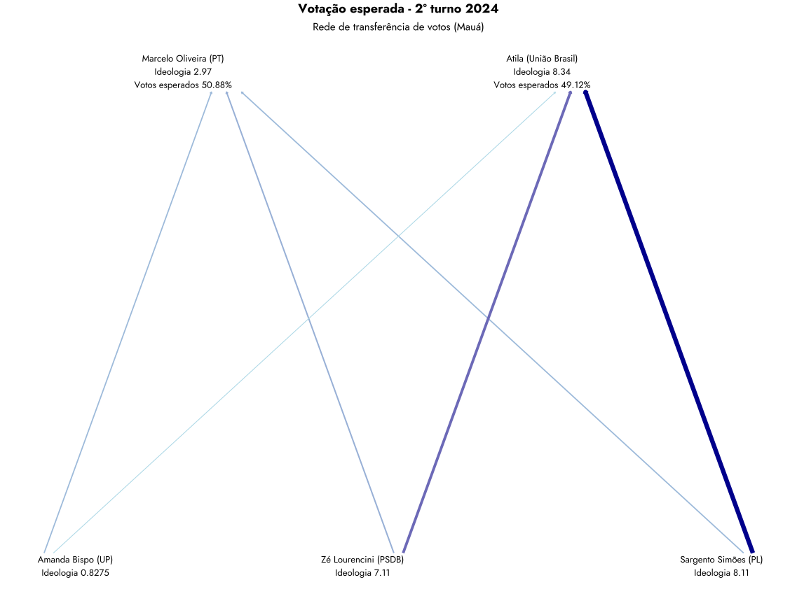
4.3.18 Niterói
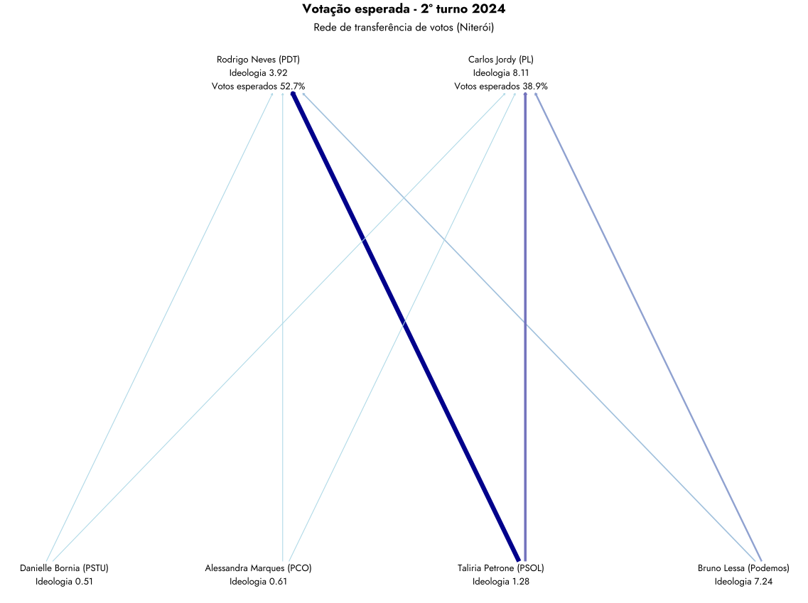
4.3.19 Olinda
4.3.20 Paulista
4.3.21 Pelotas
4.3.22 Petrópolis
4.3.23 Piracicaba
4.3.24 Ponta Grossa
4.3.25 Ribeirão Preto
4.3.26 Santa Maria
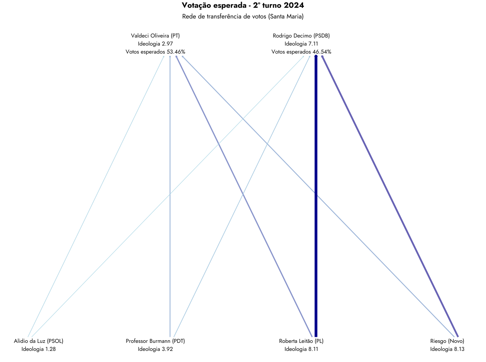
4.3.27 Santarém
4.3.28 Santos
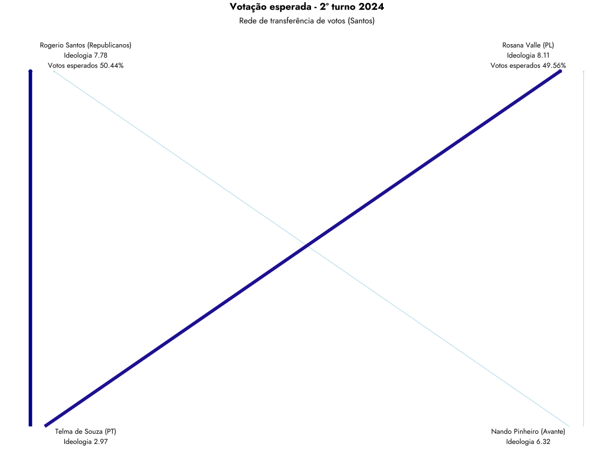
4.3.29 São Bernardo do Campo
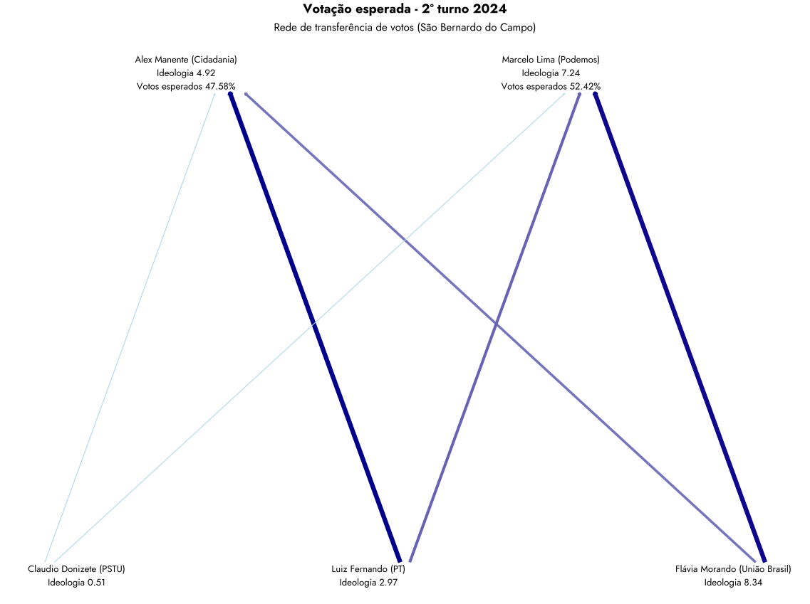
4.3.30 São José do Rio Preto
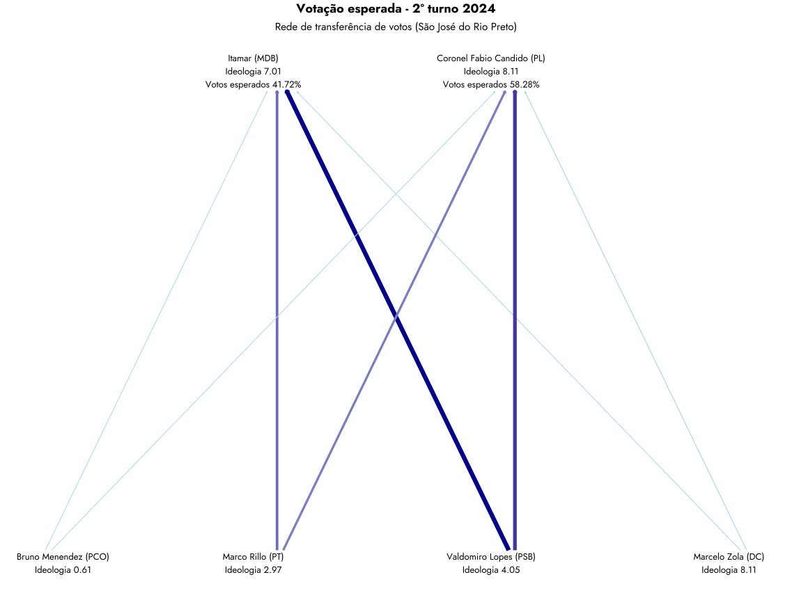
4.3.31 São José dos Campos
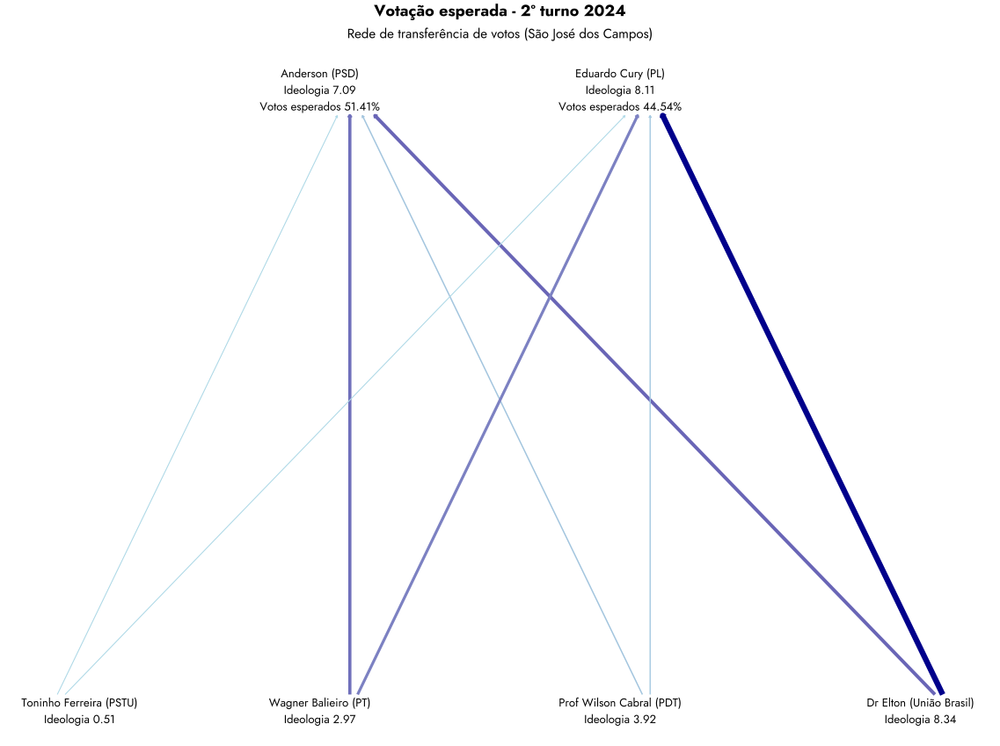
4.3.32 Serra
4.3.33 Sumaré

4.3.34 Sumaré
4.3.35 Taboão da Serra
4.3.36 Taubaté
4.3.37 Uberaba
Referências
Bolognesi, B., Ribeiro, E., & Codato, A. (2023). Uma Nova Classificação Ideológica dos Partidos Políticos Brasileiros. DADOS, 66(2), e20210164. https://doi.org/10.1590/dados.2023.66.2.303